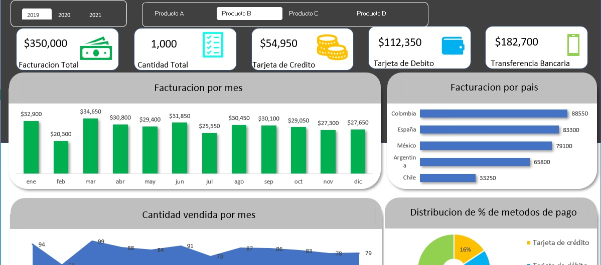
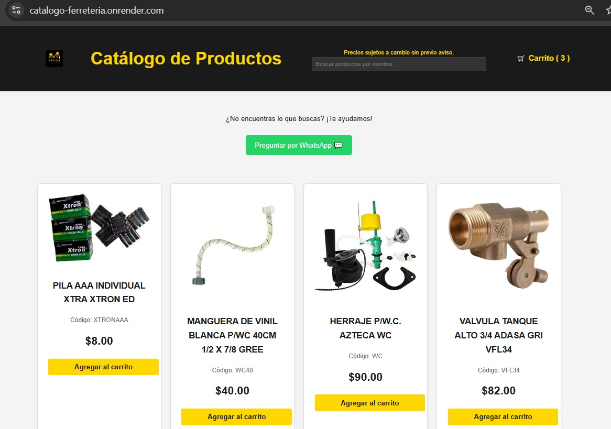
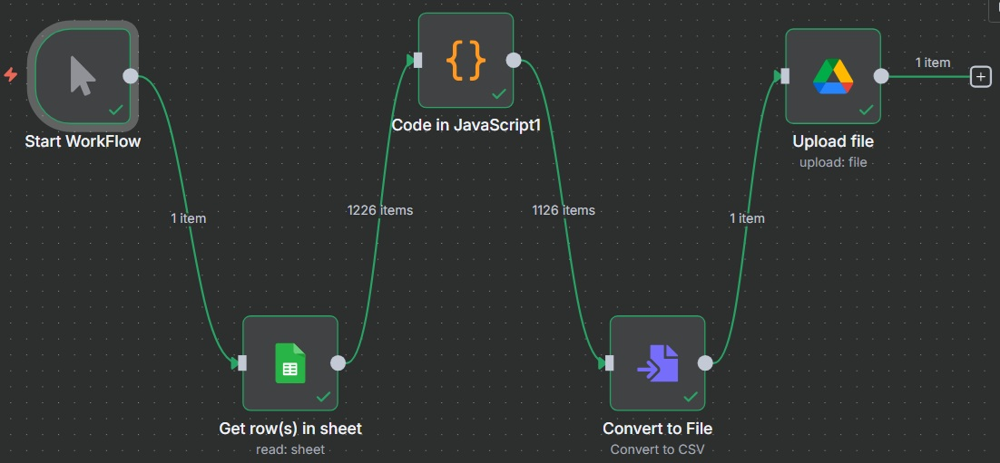
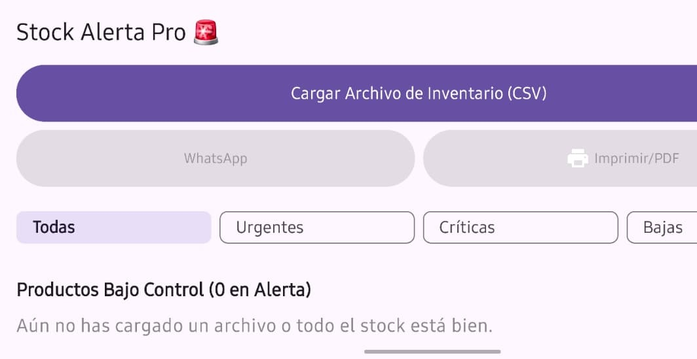

Proyectos

Dashboard Dinamico
Desarrollé un sistema de análisis de ventas a partir de una base de datos de clientes, productos, países y métodos de pago (2019–2021). El proyecto incluyó la creación de tablas dinámicas para explorar la información, un dashboard interactivo con indicadores de ventas por año, producto, país y método de pago, así como la automatización de envío de correos personalizados a clientes mediante VBA.

Sistema de Gestión Ferretería 🛠️
Plataforma web profesional para la gestión de un stock de más de 3,500 productos. El sistema fue migrado de una arquitectura en la nube a un modelo de servidor local de alta disponibilidad, optimizando costos y permitiendo el acceso de clientes mediante códigos QR en el punto de venta. Puntos Clave y Soluciones Técnicas Seguridad y Panel Administrativo (RBAC): Sistema de autenticación robusto para la gestión del inventario. El panel permite realizar operaciones CRUD, asegurando que solo el personal autorizado pueda modificar precios, existencias y activos del catálogo. Automatización de Activos (Scraping & Sincronización): Motor de scraping inteligente con 4 niveles de búsqueda para la obtención de imágenes. El sistema mantiene una integridad 1:1 entre el inventario CSV y el repositorio de archivos, automatizando la descarga y el mapeo de más de 3,000 productos. Pipeline de Optimización y Almacenamiento Local: En lugar de depender de servicios externos costosos, implementé un flujo de procesamiento incremental que ajusta contraste, color y tamaño de las imágenes directamente en el servidor local. Esto garantiza una carga rápida de la página sin consumir ancho de banda de internet excesivo. Infraestructura de Borde y Despliegue (DevOps): Configuré el servidor físico en el establecimiento para operar de manera híbrida. Utilicé un túnel seguro mediante ngrok para exponer el catálogo a internet durante el horario laboral, permitiendo que los clientes consulten el stock en tiempo real escaneando códigos QR distribuidos en el negocio. Esta solución eliminó los costos de hosting manteniendo la disponibilidad y seguridad de los datos. Orquestación y Mantenimiento: Script orquestador que sincroniza el CSV de la ferretería con la base de datos y ejecuta una limpieza de imágenes huérfanas, asegurando que el servidor local siempre tenga espacio optimizado y datos actualizados.

Análisis de Datos y Business Intelligence (n8n/JavaScript) ✨
Desarrollo y orquestación de un Pipeline de ETL automatizado construido en n8n (Node.js/npm) para transformar datos transaccionales de ventas en inteligencia de negocio estratégica. Funcionalidad Clave: El workflow utiliza JavaScript para aplicar un filtrado estricto y lógica avanzada que calcula la Ganancia Bruta/CMV (Costo de Mercadería Vendida) por producto, corrigiendo errores de cantidad. El sistema genera rankings TOP/LOW 20 de rentabilidad y volumen, y automáticamente envía el Reporte de Business Intelligence a Google Drive, optimizando la toma de decisiones de inventario y estrategia comercial.
Reproducir Video
Video Dashboard 🎥
Dashboard de Inteligencia de Negocios para Ferretería (Power BI) Este proyecto consistió en la creación de un Dashboard Interactivo en Power BI a partir de una base de datos de ventas de una ferretería. El objetivo principal fue transformar datos brutos en información estratégica y accionable para la toma de decisiones de inventario y enfoque comercial. Funcionalidades Clave Rentabilidad al Detalle Impacto en el Negocio: El dashboard permitió a la ferretería identificar rápidamente el departamento más rentable y con mayor volumen de ventas. Esta información fue crucial para optimizar la gestión de inventario, asegurando que los departamentos clave siempre cuenten con el stock adecuado o se priorice la adquisición de productos nuevos en esas áreas de alto desempeño.
Reproducir Video
App Android Stock Alerta Pro
Transforma tu hoja de cálculo de ventas en un sistema de alerta de inventario. Stock Alerta Pro integra tu
archivo CSV (convertido desde XLSX) para generar automáticamente alertas de stock clasificadas en:
🔴 Urgente: Productos agotados (stock en 0).
🟠 Crítica: Menos de 10 unidades.
🟡 Baja: Menos de 20 unidades.
La aplicación proporciona información clave para facilitar las decisiones de resurtido. Además, optimiza la
comunicación y la gestión de urgencias al permitir el envío directo por WhatsApp de los productos urgentes y
la generación de un PDF detallado de los mismos.
🛠️ Desarrollada con: Android Studio, utilizando Kotlin y la interfaz moderna de Jetpack Compose para una
experiencia de usuario fluida y eficiente.

App Gestor de Órdenes de Servicio Multi-Sectores ⚙️
Aplicación integral diseñada para gestionar el ciclo de vida completo de una reparación.
Lógica de Negocio Adaptativa: El sistema implementa lógica condicional que transforma dinámicamente los
formularios según el sector, ajustando campos específicos como
kilometraje, placas o números de serie según sea el caso.
Módulo de Evidencia Fotográfica: Incluye un sistema que permite
capturar fotos con descripciones. Estas sirven como respaldo en el reporte final para evitar
reclamos por daños previos.
Documentación Dinámica y PDF: Genera documentos inteligentes en formato PDF que cambian su naturaleza según
el estatus: actúan como Cotización cuando el servicio está pendiente o en proceso, y se transforman en una
Nota de Remisión formal una vez liquidado el trabajo.
Gestión de Pagos y Garantías: Permite registrar pagos complejos (efectivo, tarjeta o combinados) y
establecer periodos de garantía mediante una interfaz de calendario intuitiva.